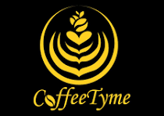
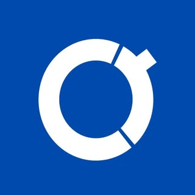
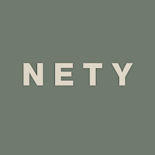
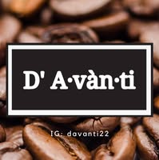
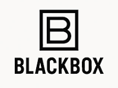
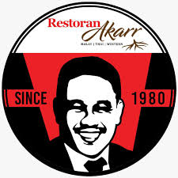

LOCAL CAFES
Discover and Support Locally Owned Cafes through our Directory!
CoffeeTyme

CoffeeTyme is a local coffee shop located around Puncak Alam with the tagline "Awaken your senses, One sip at a time"
CoffeeTyme location:
2-G-03 5, Eco Grandeur, Persiaran Eco Grandeur 1, 42300 Puncak Alam, Selangor
Coffeeruum

Coffeeruum is a local cozy coffee shop with the tagline "Good Vibe, Good Coffee
Coffeeruum location:
2A, Jalan Ppaj 2/7, Pusat Perdagangan Alam Jaya, 42300 Puncak Alam, Selangor
Kem Kopi
 >
>
Kem Kopi is a local coffee stall that is camping-inspired hidden lakeside coffee spot in Puncak Alam
Kem Kopi Location:
Jalan Astana 13/2, 42300 Puncak Alam, Selangor
The Hillpark Cafe

The Hillpark Cafe is a cafe and gaming spot that customers can locate in the Puncak Alam Area
The Hillpark Cafe Location:
29, Persiaran Hill Park, 11/10, 42300 Puncak Alam, Selangor
Kopi Monchoi

Kopi Monchoi is a local coffee spot that provides you beverages and food like sandwiches with the tagline "Serve you better coffee to heal your stress Provide brunch , toast, sandwiches and party box sandwiches"
Kopi Monchoi Location:
No 24, Jalan Niaga Bestari 1, 42300 Puncak Alam, Selangor
MN Coffee Eco

MN Coffee Eco is a local coffee shop that serves vietnamese coffee that the residents of Puncak Alam can enjoy
MN Coffee Eco Location:
Grandeur Labs, Persiaran Mokhtar Dahari, 42300 Puncak Alam, Selangor
Ngopi Hub

Ngopi Hub is a local-owned coffee shop serving coffee, tea, and food such as nasi lemak, pasembor, and spaghetti located in Puncak Alam
Ngopi Hub Location:
Unit 8 & 10, Grandeur Labs, Lot 6232, Persiaran Mokhtar Dahari, 42300 Puncak Alam, Selangor
Coofie Cafe Eco Grandeur

Coofie Cafe is night-time concept cafe that provides beverages and food to all night owls of Puncak Alam
Coofie Cafe Location:
TREX Bike Park, Eco Grandeur, 47000 Puncak Alam, Selangor
Bonks Coffee

Bonks Coffee is a late night coffee healing spot perfect for the chill night life lovers in Puncak Alam
Bonks Coffee Location:
Fasa 3, 113, Lrg Cakera Purnama 12/1, 42300 Puncak Alam, Selangor
NETY COFFEE

NETY COFFEE is a cafe that is community-based and offers a wide range of beverages such as coffee and specialty teas
NETY COFFEE Location:
08, Pusat Perdagangan Hillpark, No 33 & 33-1, jalan hillpark 11, Bandar Hillpark, 42300 Puncak Alam, Selangor
KOPI MALAM

Kopi Malam is a night-time coffee spot in Puncak Alam that has the tagline "Healing sampai Bulan
Kopi Malam Location:
PUSAT NIAGA, 10, JALAN ASTANA D13/D, ASTANA ALAM, 42300 Puncak Alam, Selangor
N Cafe

N Cafe is a mini library concept cafe that serves quality coffee, great books, and a cozy atmosphere for all residents of Puncak Alam
N Cafe Location:
NO 12 , JALAN PPAJ 2/7 , PUSAT PERDAGANGAN ALAM JAYA, 42300 Puncak Alam, Selangor
Puncak Gayo Arabica Coffee

Puncak Gayo Arabica Coffee is a coffee shop that is unique in terms of its venue because the coffee shop actually functions from a lorry van
Puncak Gayo Arabica Coffee
Gerai UPEN No 2 Medan Selera, Fasa 2, 42300 Puncak Alam, Selangor
Hawa Cafe

Hawa Cafe is a cafe-restaurant that serves coffee and local and western cuisines in Puncak Alam
Hawa Cafe Location
36, Jalan Astana E 13/E, 42300 Puncak Alam, Selangor
D'Avanti Coffee

D'Avanti Coffee is a homebased coffee shop where they serve freshly brewed coffee right outside their home
D'Avanti Coffee Location:
6, Lorong Az-zaharah 10/4b, Seksyen 10, 42300 Puncak Alam, Selangor
Black Box by Coffee On Wheels

Black Box is a local open-air coffee spot that also serves fresh gourmet burgers
Black Box by Coffee on Wheels Location:
Utopia, 42300 Puncak Alam, Selangor
Zuliya Cassandra Cafe

Zuliya Cassandra Cafe
Zuliya Cassandra Location:
Bandar Hill Park, No 56, Jalan Hillpark Aspirasi 10/3, Bandar Saujana Utama, 42300 Puncak Alam, Selangor
Akarr Cafe

Akarr Cafe is a locally owned cafe restaurant that serves a variety of coffee beverages and food from malay cuisines to thai cuisines
Akarr Cafe Location
25, Jalan Eco Grandeur 1/8, 42300 Puncak Alam, Selangor
The Ink Library Cafe

The Ink Library Cafe is a library-themed cafe that serves plenty of drinks and food as well as providing customers with a variety of magazines and books to browse through and read
The Ink Library Cafe Location
EcoWorld Gallery@Eco Grandeur, 42300 Puncak Alam 6332, Persiaran Mokhtar Dahari, 47000 Sungai Buloh, Selangor
Kafe Kopi Manees

Kafe Kopi Manees is a small family owned home-cafe that serves from your regular kopi kampung to Italian Coffee
Kafe Kopi Manees Location:
LBS, No.8 Jln Irama 11, Irama Perdana, Alam Perdana, 42300 Puncak Alam, Selangor
Leap Coffee

Leap Coffee is a home based cafe that is based wihthin the Melodi Perdana Apartment Residences, providing the community with fresh brewed and high-quality coffee
Leap Coffee Location
MPA-18-13, Melodi Perdana Residences Puncak Alam, 42300 Kuala Selangor, Selangor
Kopi-O Lab

Kopi-O Lab is a locally owned cafe restaurant that serves coffee and traditional malay cuisines
Kopi-O Lab Location:
No 22, Ruang Niaga Eco Grandeur, Persiaran Mokhtar Dahari, 42300 Puncak Alam, Selangor
Ngopi Dan Toast

Ngopi dan Toast is a local cafe in Puncak Alam that serves a variety of coffee and specializes in breakfast items such as Toasts and Sandwiches
Ngopo dan Toast Location:
51, Jalan Jati 3, Saujana Utama 2, 47000 Sungai Buloh, Selangor
Rindu Mama Cafe